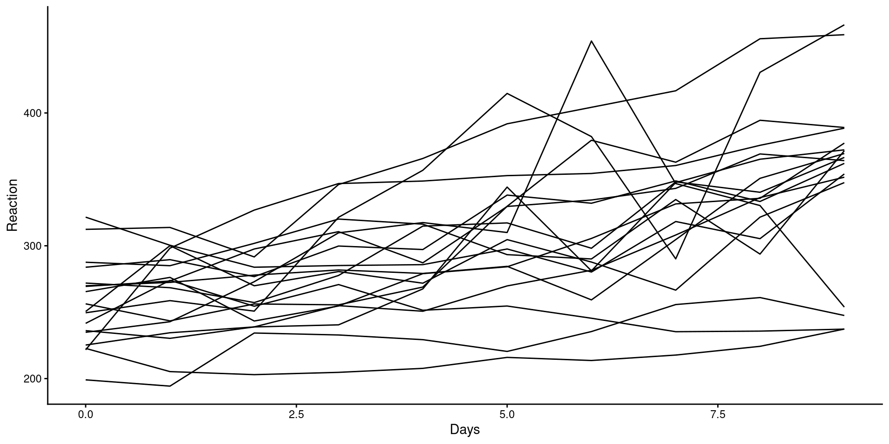

PSYC 6802 - Introduction to Psychology Statistics
The ez package (Lawrence, 2016) is a package designed to make ANOVAs analysis in R easier and more intuitive. It has some nice features, but does some things that I don’t personally love.
The lme4 package (Bates et al., 2025) is a popular package for running hierarchical linear modeling (HLM) in R.
The lmerTest package (Kuznetsova et al., 2020) builds upno lme4 and provides addition summary information.
The performance package (Lüdecke et al., 2025) provides a host of function to evaluate the performance and quality of HLM models.
Today we will look at data from (Schmidt & Besner, 2008), where the authors investigate how levels of rewards impacted performance on the Stroop task:
The data that we have on the previous slide is wide data. Most repeated measures packages prefer by far long data. We can use the pivot_longer() function from the dplyr package to turn wide data into long data:
And now dat_long looks like this:
cols =: here you select the column of the data that you want to “stack”. Note that other columns in the data will automatically be sorted approprtiately as happened with the Subject column.
names_to =: here you define a new column where the labels for each value will end up.
values_to =: here you define a new column where your numerical values will end up.
There is also a function called pivot_wider() that can turn the data from long into wide.
ezThe ezANOVA() function from the ez package is convenient for running repeated measure ANOVA.
As always, it is good practice to turn categorical variables into factor variables:
Then, we can use the ezANOVA() function to run a repeated measures ANOVA:
The ezANOVA() function works slightly differently compared to what we have seen before:
data = the name of your dataset.dv = this is the name of your dependent variable (DV).wid = this is the column that indicates the ID of each participant.within = this is you independent variable (IV). The “within” means that every individual experiences multiple levels of the IV (i.e., the repeated measures part).A between = argument is also available for running “normal” (between-subject) ANOVAs.
The results are store in the ANOVA element. We can just print it to look at the results:
The Effect of Contingency is significant, emaning that there are error rates differences in the stroop task depending on the type of reward. ges stands for generalized eta squared and is a measure of effect size; here, it is very small at roughly \(\eta = .01\).
We can also test whether the sphericity assumption has been violated has been violated. If so, we should look at the results below. Here the assumption holds.
We would like to know which contingencies are significantly different in error rates on the stroop task. Because ezANOVA results do not play super well with the emmeans package, we can just run multiple paired samples t-tests:
Both mean difference are significant and you can find the difference in percentage of errors under the mean of x line.
Now we are going to introduce hierarchial linear modeling (HLM), also referred to as multi-level modeling (MLM). HLM usually provides more interesting information compared to repeated measures ANOVA and allows for continuous IVs.
The data comes from Belenky et al. (2003), where the authors looked at the effects of sleep deprivation on reaction times.
Reaction: Reaction time in ms.
Days: Days of sleep deprivation. Ranges from 0 to 9.
Subject: the subject ID.
There are 18 participants in these data:
HLM is often employed in longitudinal designs, which is the case of these data. As such, we are often interested in the trend as time passes.
We can plot the trend of Reaction for each participant to get a sense of the general trend:
Although reaction times increase with higher sleep deprivation, we can see that the increase is not the same for all participants.

lmerTest packageThere are a couple of similarly name package to fit HLM models. I’ll just use lmerTest because it automatically includes significance tests for some of the results.
Linear mixed model fit by REML. t-tests use Satterthwaite's method [
lmerModLmerTest]
Formula: Reaction ~ (1 | Subject)
Data: sleepstudy
REML criterion at convergence: 1904.3
Scaled residuals:
Min 1Q Median 3Q Max
-2.4983 -0.5501 -0.1476 0.5123 3.3446
Random effects:
Groups Name Variance Std.Dev.
Subject (Intercept) 1278 35.75
Residual 1959 44.26
Number of obs: 180, groups: Subject, 18
Fixed effects:
Estimate Std. Error df t value Pr(>|t|)
(Intercept) 298.51 9.05 17.00 32.98 <2e-16 ***
---
Signif. codes: 0 '***' 0.001 '**' 0.01 '*' 0.05 '.' 0.1 ' ' 1We use the lmer() function from the lmerTest package. notice the formula:
Reaction ~ (1 | Subject)
Reaction is the DV, while the (1 | Subject) part tells R that we think that the participants start with different reaction times.
The (1 | Subject) part is also known as a random intercept. You can think of Subject as an IV.
You will notice that the summary has two sections
Linear mixed model fit by REML. t-tests use Satterthwaite's method [
lmerModLmerTest]
Formula: Reaction ~ (1 | Subject)
Data: sleepstudy
REML criterion at convergence: 1904.3
Scaled residuals:
Min 1Q Median 3Q Max
-2.4983 -0.5501 -0.1476 0.5123 3.3446
Random effects:
Groups Name Variance Std.Dev.
Subject (Intercept) 1278 35.75
Residual 1959 44.26
Number of obs: 180, groups: Subject, 18
Fixed effects:
Estimate Std. Error df t value Pr(>|t|)
(Intercept) 298.51 9.05 17.00 32.98 <2e-16 ***
---
Signif. codes: 0 '***' 0.001 '**' 0.01 '*' 0.05 '.' 0.1 ' ' 1Random Effects:
\(\hat{\psi} = 1278\): this is the variance of the mean reaction time across participants (between subject variance).
\(\hat{\theta} = 1959\): this is the variance of the residuals. Here it represents the within subject residuals and it is the variance that cannot be explained differences across people.
Fixed Effects:
\(\beta_0 = 298.51\): this is the same as the intercept in linear regression. Here it represents the average reaction time. The \(\hat{\psi}\) represents how much that varies between subjects.
Because we are measuring the same individuals, we can expect measurement from the same individuals to be similar to each other. We can actually calculate how similar measurements from the same individuals are, and it’s done with the intraclass Correlation Coefficient (ICC).
The ICC is the amount of total variance in the outcome that is due to within group variation:
\[ ICC = \frac{\hat{\psi}}{\hat{\theta} + \hat{\psi}} = \frac{1278}{ 1959 + 1278} = .395 \]
This tells us the percentage of the variance in Reaction that is due to between subject difference (i.e., how much do differences between people affect reaction times). We can also use the icc() function from the performance to get the ICC:
Linear mixed model fit by REML. t-tests use Satterthwaite's method [
lmerModLmerTest]
Formula: Reaction ~ (1 | Subject) + Days
Data: sleepstudy
REML criterion at convergence: 1786.5
Scaled residuals:
Min 1Q Median 3Q Max
-3.2257 -0.5529 0.0109 0.5188 4.2506
Random effects:
Groups Name Variance Std.Dev.
Subject (Intercept) 1378.2 37.12
Residual 960.5 30.99
Number of obs: 180, groups: Subject, 18
Fixed effects:
Estimate Std. Error df t value Pr(>|t|)
(Intercept) 251.4051 9.7467 22.8102 25.79 <2e-16 ***
Days 10.4673 0.8042 161.0000 13.02 <2e-16 ***
---
Signif. codes: 0 '***' 0.001 '**' 0.01 '*' 0.05 '.' 0.1 ' ' 1
Correlation of Fixed Effects:
(Intr)
Days -0.371We can add predictors as we would with the lm() function by using the + symbol. If we scroll down to Fixed effects we see that now we have an additional parameter:
\(\beta_1 = 10.47\): This is the average increase in reaction time for each additional day of sleep deprivation.
We can also see that by adding a predictor, both \(\hat{\psi}\) and \(\hat{\theta}\) have changed. We look at the adjusted ICC:
We can also check whether adding Days as a predictors provides a significant improvement in predictions. Just as we have done previously, we use the anova() function:
Data: sleepstudy
Models:
HLM_mod: Reaction ~ (1 | Subject)
HLM_mod2: Reaction ~ (1 | Subject) + Days
npar AIC BIC logLik -2*log(L) Chisq Df Pr(>Chisq)
HLM_mod 3 1916.5 1926.1 -955.27 1910.5
HLM_mod2 4 1802.1 1814.8 -897.04 1794.1 116.46 1 < 2.2e-16 ***
---
Signif. codes: 0 '***' 0.001 '**' 0.01 '*' 0.05 '.' 0.1 ' ' 1On top of the likelihood ratio test (LRT), we also get the AIC and BIC, which are additional fit statistics. Lower AIC and BIC mean better fit. Similarly, a significant p-value indicates that the more complex model fits the data best.
Unsurprisingly, in every case, the model with Days as predictor fits the data best. Higher sleep deprivation does indeed increase reaction times.
PSYC 6802 - Lab 14: Repeated Measures